Introduction
This instrument is an attempt to simulate a tone wheel organ with a rotating speaker effect like that produced by the Hammond B3 organ and the Leslie rotating speaker. The first section attempts to model the tone wheel organ and the second section attempts to model the rotating speaker. The final section discusses some suggestions for future modification of the instrument.
Tone Wheel Organ
The first step towards reproducing this instrument is to study the internal structure of the tone wheel organ1. The heart of the tone wheel organ is its tone wheel mechanism. This consists of a central shaft with gears coupled to 91 tone wheels. A magnetic pick-up senses the distance to the wheel and generates an electric signal proportional to this distance.
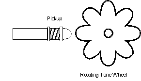
Figure 1
Tone wheel and pickup.
Due to the "flower" shape of the wheels and the filtering effect of the pick-ups the signal produced is very close to a sine wave in shape. GEN 10 can be used to set up a sine wave table.
f1 0 8192 10 1
An organ timbre is created by adding together signals from nine tone wheels. The amount of each harmonic added is controlled by nine drawbars with the following frequencies: Subfundamental, subthird, fundamental, second, third, fourth, fifth, sixth and eighth. Subfundamental is one octave below the fundamental. Subthird is one octave below the third. A separate oscil opcode can be used to generate each harmonic. The following Csound code fragment attempts to implement this aspect of the sound:
asubfund oscil p6,.5*ifqc,iwheel1,iphase/(ikey12) asub3rd oscil p7,1.4983*ifqc,iwheel2,iphase/(ikey+7) afund oscil p8,ifqc,iwheel3,iphase/ikey a2nd oscil p9,2*ifqc,iwheel4,iphase/(ikey+12) a3rd oscil p10,2.9966*ifqc,iwheel4,iphase/(ikey+19) a4th oscil p11,4*ifqc,iwheel4,iphase/(ikey+24) a5th oscil p12,5.0397*ifqc,iwheel4,iphase/(ikey+28) a6th oscil p13,5.9932*ifqc,iwheel4,iphase/(ikey+31) a8th oscil p14,8*ifqc,iwheel4,iphase/(ikey+36)
In this instrument parameters p6-p14 represent the values of the 9 drawbars. The fundamental frequency is given by ifqc. This is multiplied by equal temperment steps to obtain the other eight harmonics.
The twelve lowest tone wheels have only two teeth and in the Hammond B3 series had increased odd harmonic content which may be interpreted to mean they are somewhat rectangular in shape. To implement this table 2 is set up with some odd harmonic content.
f2 0 1024 10 1 0 .2 0 .1 0 .05 0 .02
The keyboard key pressed can be calculated from the frequency parameter p5. The key position is used to assign table 2 to the lowest twelve frequencies and table 1 to the others.
iwheel1 init ((ikey12)>12?1:2) iwheel2 init ((ikey+7)>12?1:2) iwheel3 init (ikey>12?1:2) iwheel4 init 1
The phase of the tone wheels depends on the number of "petals" on a wheel and the alignment of the wheels. Some continuous variation in phase based on the wheel number and the time p2 was desired. The variable iphase is set to p2 and then divided by the tone-wheel number. In a way p2 represents the central shaft of the organ. Finally the fundamentals are added together into a global variable.
Rotating Speaker Effect
The second aspect of the classic Hammond organ sound is the Leslie rotating speaker. The speaker is powered by a tube amplifier. The structure of the Leslie speaker system consists of a high frequency driver pointing up into a plastic horn. The driver remains stationary and the horn rotates spraying the sound around the room. A low frequency driver directs sound downward into a rotating scoop.
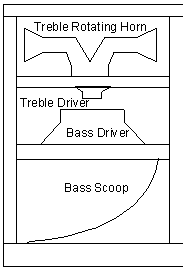
Figure 2
Rotating speaker system.
The aspects considered to model this system were distortion introduced by the amplifier, acceleration rates of the horn and scoop, the Doppler effects of the rotating horn and scoop, different directional effects of different frequencies and stereo phase separation due to either microphone placement or separation between the listeners ears.
The first step taken in simulating this system is to add distortion to the sound by passing it through a waveshaping table. GEN 8 is used to set up a table such that values close to zero will be reproduced linearly while values further away from zero are compressed. This done using one of the following tables:
f5 0 8192 8 .8 336 .78 800 .7 5920 .7 800 .78 336 .8
f6 0 8192 8 .8 336 .76 3000 .7 1520 .7 3000 .76 336 .8
Table 5 produces a moderate distortion and table 6 produces increased distortion.
The next aspect considered is the acceleration of the horn and the scoop. The slow and fast rates of the high frequency horn are about .8 cycles/sec and 8 cycles/sec respectively. Acceleration of the horn takes about one second. The slow and fast rates of the scoop are about .7 cycles/sec. and 7 cycles/sec2. The acceleration of the bass scoop takes about two seconds. The following envelopes use the linseg opcode to set the rotation rates, acceleration rates and hold times. This is set up in a separate instrument which acts as the foot switch and passed on using global variables.
gkenv linseg gispeedi*.8,1,gispeedf*.8,.01,gispeedf*.8 gkenvlow linseg gispeedi*.7,2,gispeedf*.7,.01,gispeedf*.7
The next step is to produce a Doppler effect due to the rotation of the speakers. This is accomplished by setting up a delay line using the delay opcode and accessing it with a variable time delay tap using the deltapi opcode. The tap point is controlled by an oscil opcode accessing a sine table. Separate taps are used for right and left channels. The magnitude of the oscillation corresponds to the radius of rotation.
koscl oscil 1,kenv,1,ioff koscr oscil 1,kenv,1,ioff+isep
The phase separation between the signals is controlled by the variable isep. This can be thought of as the angle of separation between the listeners ears or the placement of microphones around the speaker. The variable ioff is a phase offset which is intended to allow for multiple rotating speakers at different locations in the room.
kdopl = .01koscl*.0002 kdopr = .012koscr*.0002 aleft deltapi kdopl aright deltapi kdopr
The Doppler effect is repeated for the low frequency section.
The final aspect considered is presentation of a frequency dependent stereo image. High frequency sound is more directional than low frequency sound. To simulate this the frequency is divided into three segments. First the right and left high frequency components are filtered using the butterbp opcode.
alfhi butterbp aleft,7000,6000 arfhi butterbp aright,7000,6000
The center frequency and bandwidth were determined empirically. The high frequency segment is modulated by a narrow pulse using GEN 7 to set up the following table.
f3 0 256 7 0 110 0 18 1 18 0 110 0
The middle frequency sound is modulated by a wider pulse and the low frequency is modulated by a sine wave.
alfmid butterbp aleft,3000,2000 arfmid butterbp aright,3000,2000
The pulse table is swept with oscil using the same offset and separation as the Doppler tap.
kflohi oscil 1,kenv,3,ioff kfrohi oscil 1,kenv,3,ioff+isep kalosc = koscllow*.4+1 karosc = koscrlow*.4+1
Finally the three filtered and modulated signals for each channel are added together to complete the instrument.
Discussion
My instrument can only approximate the rich, warm, gritty character of a real Hammond organ. One advantage of using the Csound environment is its flexibility. The shape of the tone wheels can easily be changed. Samples from single tone wheels of actual instruments could be set up in tables. This may improve the simulation. Triangle waves or other wave shapes could be used instead of the sine waveforms. The instrument can be extended to have any number of additional speakers. Variable delay lines could be set up to simulate the complex echoes produced by the rotating speaker system.
Introduction
This set of instruments attempts to model some classic analog synthesizer instruments using Csound. Early synthesizers used fairly simple waveforms which were then processed through a resonant low pass filter. This type of filter provided one of the most distinctive elements of early synthesizers. Development of a two pole resonant low pass filter and some variations of this filter are discussed. The cascade form of a filter is discussed and a four pole filter is derived using cascade form.
Oscillators
Early analog synthesizer oscillators generated very simple waveforms. Some of the most common used are the sine, square, sawtooth and triangle waveforms. These can be set up easily in Csound using tables which are then accessed using the oscil opcode.
f1 0 1024 10 1 ;Sine wave
f2 0 256 7 1 128 1 0 1 128 1 ;Square wave
f3 0 256 7 1 256 1 ;Sawtooth
f4 0 256 7 1 128 1 128 1 ;Triangle
Pulse width modulation is often used in analog synthesis to produce a more complex timbre. In pulse width modulation a square wave is gradually transformed from a narrow square pulse to a wide square pulse. A sine wave can be used to modulate the pulse width. The rate of modulation can be set to increase with increasing frequency. The following Csound code accomplishes this.
ksine oscil 1.5,ifqc/440,1 ksquare oscil ifqc*ksine,ifqc,2 axn oscil iamp,ifqc+ksquare,itabl1
The opcodes rand and buzz can also be used as sources for an analog synthesizer.
Resonant Low Pass Filter
The key step in reproducing a classic analog sound is the development of a good resonant low pass filter. A discussion of filter theory4 will help to illuminate the approach taken in designing this filter.
A general filter can be defined using the differential equation
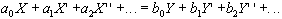 (1)
Where
X is the input signal,
Y is the output signal,
X' is the first derivative of X with respect to time,
X'' is the second derivative of X with respect to time,
Y' is the first derivative of Y with respect to time,
Y'' is the second derivative of Y with respect to time,
ai and bi are coefficients.
Those not familiar with calculus can think of the first derivative as being the slope of the function and the second derivative as being the curvature of the function. The number of poles in the filter is determined by the highest order derivative in the equation.
The frequency response of the above equation can be written directly from it using the following procedure. Replace the undifferentiated terms with a one. Replace the differentiated terms with frequency raised to the power of the derivative. Construct a ratio with the left half of the equation as the numerator and the right half of the equation as the denominator. For example the above differential equation would yield the frequency response given in equation (2).
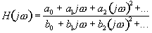 (2)
Where 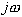 represents frequency. A spreadsheet or a math program can be used to observe how this equation responds to changes in the coefficients.
A resonant low pass filter can be generated by using the filter response function given in equation (3).
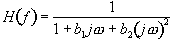(3)
It can be seen that as the frequency approaches zero the b1 and b2 terms vanish and this function approaches one. As the frequency approaches infinity the squared term begins to dominate and this function approaches zero. Resonance is introduced by making b1 negative and b2 positive. carefully adjusting the values of the coefficients results in a peak at the cut off frequency. A typical curve is given in figure (3).
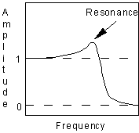
Figure 3
Graph of resonant low-pass filter frequency response.
The differential equation corresponding to this frequency response is
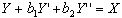 (4)
To use this in Csound it must be converted from the continuous form of equation (4) to a discrete form. One way to do this is to convert the differential equation into a difference equation. The slope Y'=dY/dt can be approximated by DY/Dt and the curvature Y''=d2Y/dt2 can be approximated by D(DY)/D(Dt). Letting 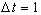 simplifies the algebra involved in solving this. This is valid if the sample rate is constant and the units of time are equal to 1/sr. Substituting the difference approximation for the differentials in equation (4) and knowing that DY=Yn-Yn-1 yields
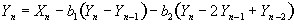(5)
This can be solved for 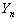 to obtain
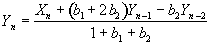(6)
A Csound implementation follows:
aynm1 init 0 aynm2 init 0 ayn = ((kb1+2*kb2)*aynm1kb2*aynm2+axn)/(1+kb1+ kb2) aynm2 = aynm1 aynm1 = ayn
Unfortunately the difference equation only approximates the differential equation. Numerical methods could be used to solve the equation to any degree of precision but this would be computationally expensive. The more common approach is to adjust the coefficients to give a similar response. For the difference equation
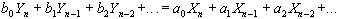 (7)
the frequency response is
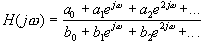 (8)
Note that 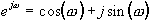.
The following relationships were determined empirically to produce fairly independent response of frequency and resonance throughout a useful range of these parameters.
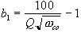 (9)
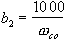 (10)
Where:
Q is resonance
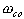 is cut-off frequency
This can be written in Csound as:
kb1 = 100/irez/sqrt(kfco)1 kb2 = 1000/kfco
This completes the basic two pole filter.
Some modifications of the filter will be considered next. The Roland TB-303 is a much sought after synthesizer due to its unique sound. This is in part due to the unusual character of its filter. It has been suggested that one of the aspects of this filter which make it unique is the circuitry which prevents the filter from going into self oscillation. When resonance is increased the filter distorts instead of self oscillating. This type of behavior can be simulated in Csound by doing the following. Isolate the resonating portion of the signal and pass it through a distortion table. Add the distorted signal to a low pass filtered original signal. The following section of Csound code accomplishes this.
atemp tone axn,kfco aclip1 = (aynatemp)/100000 aclip tablei aclip1,7,1,.5 aout = aclip*20000+atemp
This produces an interesting sound with some of the character of the TB-303.
Extension of the above techniques to higher order filters presents some problems. As the order of the equations increases the coefficients become extremely sensitive to small changes and round off errors. One form of higher order filters that does not have this defect is called the cascade form. The following Csound code implements the cascade form to obtain a four pole filter.
ayn1 = ((ka1+2*ka2)*ayn1m1ka2*ayn1m2+axn)/(1+ka1+ka2) ayn1m2 = ayn1m1 ayn1m1 = ayn1 ayn = ((kb1+2*kb2)*ayn2m1kb2*ayn2m2+ayn1)/(1+kb1+ kb2) ayn2m2 = ayn2m1 ayn2m1 = ayn
This technique can be extended to obtain higher order filters.
Discussion
The presented filters provide a very useful basis for future work in simulating analog synthesizers. Some future things to try would be to modify the distortion table in the distortion filter to have unusual shapes. Development of more complex waveforms such as a synched oscillator or a sample and hold waveform would also be interesting. Waveforms with sharp edges stimulate the resonance aspect of the filter and may result in more interesting timbres. High pass and band-pass filters could be developed using the methodology described in this section.
References
1. Rossing, Thomas D., The Science of Sound. Reading Massachusetts: Addison-Wesley Publishing Company, Inc., 1982, 488-490, 495.
2. Baker, B., Hammond Leslie FAQ. http://wcbi.com/organs/hammond/faq/.
3. Henricksen, C. "Unearthing the Mysteries of the Leslie Cabinet", Recording Engineer/Producer Magazine, April 1981. http://wcbi.com/organs/hammond/faq/mystery/mystery.html
4. Oppenheim, A., Willsky A., with Young, I. Signals and Systems. Englewood Cliffs, N.J.: Prentice-Hall, 1983. 232-239, 345-351.